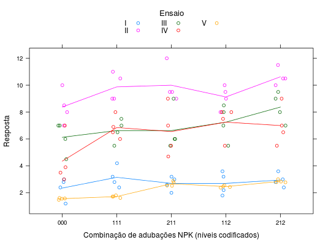

Grupo de experimentos de adubação de algodão, todos em delineamento inteiramente casualiado com 4 repetições cada. As combinações de NPK formam em ensaio fatorial com um tratamento adicional.
Um data.frame com 100 observações e 6 variáveis, em
que
experreptNPKyPIMENTEL-GOMES (2009), página 142.
Esse experimento é um ensaio fatorial com um tratamento adicional, a testemunha, que é a combinção das doses zero de NPK, e a porção fatorial é a combinação das doses 1 e 2 de NK tendo o P fixo em 1.
library(lattice) data(PimentelPg142)#> Warning: data set ‘PimentelPg142’ not foundstr(PimentelPg142)#> 'data.frame': 100 obs. of 6 variables: #> $ exper: Factor w/ 5 levels "I","II","III",..: 1 1 1 1 1 1 1 1 1 1 ... #> $ rept : int 1 1 1 1 1 2 2 2 2 2 ... #> $ N : int 1 1 2 2 0 1 1 2 2 0 ... #> $ P : int 1 1 1 1 0 1 1 1 1 0 ... #> $ K : int 1 2 1 2 0 1 2 1 2 0 ... #> $ y : num 4.2 3.6 3.2 3.6 2.4 2.4 2.2 2.6 2.8 1.2 ...# Fatorial incompleto ou fatorial completo 2 x 2 + 1 testemunha. ftable(xtabs(~P + N + K, data = PimentelPg142))#> K 0 1 2 #> P N #> 0 0 20 0 0 #> 1 0 0 0 #> 2 0 0 0 #> 1 0 0 0 0 #> 1 0 20 20 #> 2 0 20 20xyplot(y ~ interaction(N, P, K, drop = TRUE, sep = ""), groups = exper, data = PimentelPg142, type = c("p", "a"), jitter.x = TRUE, auto.key = list(title = "Ensaio", cex.title = 1.1, columns = 3), xlab = "Combinação de adubações NPK (níveis codificados)", ylab = "Resposta")